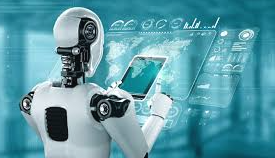

Sztuczna Inteligencja

Sztuczna inteligencja, SI (ang. artificial intelligence, AI) – inteligencja wykazywana przez urządzenia sztuczne (w przeciwieństwie do inteligencji naturalnej). John McCarthy jest uznawany za autora tego terminu, jednak koncepcje i badania sięgają wcześniejszych lat, a wkład w rozwój SI mieli również inni pionierzy, jak Alan Turing czy Marvin Minsky. W potocznym rozumieniu jest ona często używana w kontekście „prawdziwej sztucznej inteligencji”. W informatyce i kognitywistyce oznacza także tworzenie modeli i programów symulujących choć częściowo zachowania inteligentne[1][2]. Sztuczna inteligencja jest także przedmiotem rozważań filozofii (filozofia sztucznej inteligencji) oraz przedmiotem zainteresowania nauk społecznych.